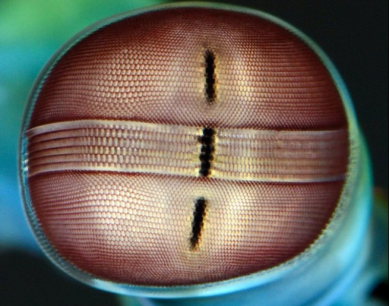
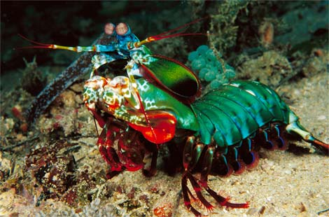

Fatos sobre o Stomatopoda
Conhecido como tamarutacas ou lacraias-do-mar no Brasil, o Stomatopoda é um crustáceo marinho que caçam as suas presas com o auxílio de uma visão extremamente apurada, capaz de interpretar polarização no espectro ultravioleta e infravermelho. Para tal feito, o Stomatopoda possui dezesseis cones receptores de cor
Informações gerais
O nome científico do stomatopoda é Odontodactylus scyllarus. A classificação científica dessa espécie é:
| Reino: | Filo: | Subfilo: | Classe: | Subclasse: | Ordem: |
|---|---|---|---|---|---|
| Animalia | Arthropoda | Crustacea | Malacostraca | Hoplocarida | Stomatopoda |
A visão do Stomatopoda
A visão do stomatopoda é extremamente apurada.
O habitat do Stomatopoda
O Stomatopoda é um crustáceo marinho de águas rasas e de temperatura amena.
O potente soco do Stomatopoda
O soco do Stomatopoda pode atingir até 80km/h.